Installation of transmission valve body ASSY (U340F) |
| 1. Transmission Valve Body ASSY installation |
| 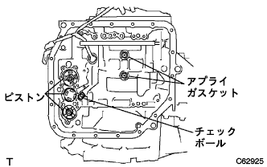 |
Confirm that the position shown in the figure contains two checkballs, two applied gaskets and each piston.
 |
Tighten 13 bolts evenly and attach the valve body ASSY to the automatic transxle.
| bolt | Length [mm] |
|---|---|
| a | 32 |
| B | 22 |
| C | 55 |
| D | 45 |
 |
Combine the manual valver to the center of the roler part of the manual dent spring with two bolts to tighten the manual dent spring and cover.
| bolt | Length [mm] |
|---|---|
| a | 14 |
| B | 45 |
| 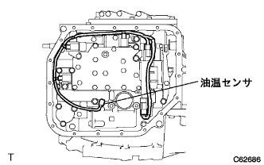 |
Attach each solenoid connector.
Attach the oil temperature sensor with bolts and lock plates.
| 2. Valve body oil strainer Assy mounting |
 |
Apply an auto fluid type T-IV to the new O-ring and attach it to an oil strainer.
 |
Attach the oil strainer with three bolts.
| 3. Automatic Translus Axle Oil Pan SUB-ASSY (ATM) Installation |
| 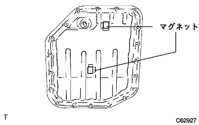 |
Attach the two oil cleaner magnet to the position of the figure.
Attach a new oil panguto to the oil pan.
 |
Attach the oil pan with 19 bolts.
| 4. Torque converter ASSY installation |
| 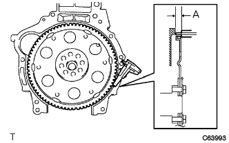 |
The dimensions A between the transxle mounting surface and the torque converter mounting surface of the drive plate are measured using a caliper.[*1]
 |
Match the front oil pump drive gear key directly above and mark the housing.
| 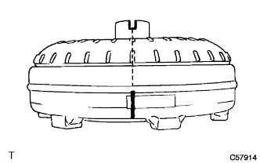 |
Mark the torque converter so that you can see the position of the groove.
 |
Combine the case and the converter mark to match the input shaft spline and the turbine runna spline.
 |
While rotating the converter, the spline of the status shaft and the spline of the status are used.
 |
Rotate the converter, match the case with the case, and adjust the key groove of the oil pump drive gear and the converter key groove.
| 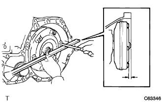 |
Measure the dimensions from the set block to the housing terminal, and confirm that it is larger than the A value measured in [*1].
| 5. Automatic Transxle ASSY installation |
 |
Confirm that the engine has a knockpin.
Place the engine and the transxle ASSY, match the knockpin and knockpin hole, and tighten the seven bolts in the figure.
Apply Adherive 1324 to six torque converter set bolts.
 |
Tighten 6 torque converter set bolts.
| 6. Installation of engine mounting bracket LH |
| 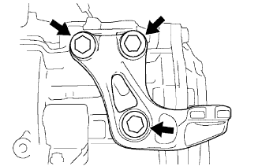 |
With three bolts, attach the engine mounting bracket LH to the automatic transxle.
| 7. Transmission oil filter tube SUB-ASSY installation |
| 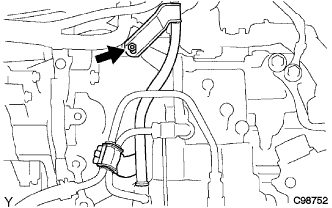 |
Apply the auto fluid type T-IV to the new O-ring and attach it to an oil Philatube.
At the bolt, attach the oil filthube to the transxle ASSY.
| 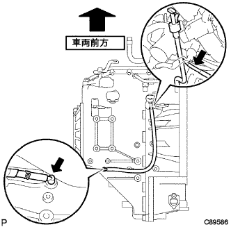 |
Attach the briefer hose to an oil filler tube.
Attach the oil level gauge to the oil filterve.
Temporary oil coollinelet tube No.1 and oil cooler outlet tube No.1.
| 8. Oil Cooler Outlet Tube No.1 Installation |
| 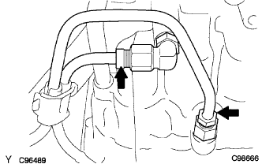 |
Fix the union bolt using a spanner (19mm) and tighten the oil cooler outlet tube using a union nut wrench 17.
| 9. Oil coollinelet tube No.1 installation |
Fix the union bolt using a spanner (19mm) and tighten the oil cool linelet tube using a union nut wrench 17.
| 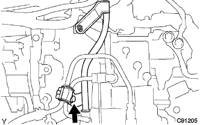 |
In the bolt, attach the oil cooler tube clamp to the transxle ASSY.
| 10. Transmission Control Cable Bracket No.1 Installation |
With two bolts, install the transmission control cable bracket No.1.
| 11. Speedometer sensor installation |
| 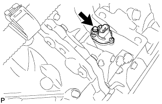 |
Apply an auto fluid type T-IV to the new O-ring and attach it to the speedometer sensor.
Attach a speedometer sensor and a speedometer sensor ribngia with bolts.
Connect the speedometer sensor catter.
| 12. Installation of air cleaner bracket |
 |
With two bolts, attach the air cleaner bracket and Briza Horse clamp to the automatic transxle.
| 13. Installation of wire harness |
| 14. Transfer ASSY installation |
Attach the transfa ASSY to the Transxle ASSY.
 |
Attach 6 nuts.
| 15. Transfastifuna plate RH installation |
 |
With 5 bolts, attach the Transfastifuna plate RH.
| 16. Transfastifuna plate CTR installation |
 |
With 5 bolts, attach the Transfastifna Plate CTR.
| 17. Installation of manifold support bracket |
 |
With three bolts, attach a manifold support bracket.
| 18. Installation of engine mounting bracket RR |
 |
With three bolts, attach the engine mounting bracket RR.
| 19. Starter ASSY installation |
| 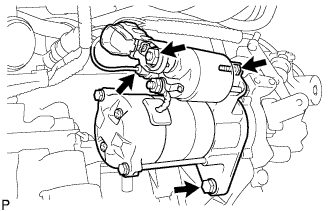 |
Attach the starter ASSY with two bolts.
Connect the connector.
Attach 30 terminals with nuts.
Close the terminal cap.
 |
The protrusion of the flywheel housing side cover is completely inserted into the back of the cylinder block, and the protrusion is applied to the cylinder block and the claw is inserted into the oil pan and the flywheel housing cover is attached.
| 20. Exhaust pipe assessed |
Use caliper to measure the free length of the compression spring.
 |
The new gasket is gradually driven to the exhaust manifold using a wood piece and a hammer.
With two bolts, attach the exhaust pipe ASSY FR to the exhaust manifold.
| 21. Front suspension cross member SUB-ASSY installation |
In the bolt, attach the engine mounting insulator RR and the engine mounting bracket RR.
Remove the two bolts and remove the two engine hangers.
At the bolt, attach a radio setting capacitor.
At the bolt, attach the oxygiensen seashilling bracket.
| 22. Power steering link assertion |
With two bolts, attach the power steering assy W/Vane pump.
| 23. Bane pump assignment |
 |
Temporarily attach the vane pump ASSY with two bolts.
Connect the connector.
Attach the vane pump V belt.
Adjust the tension of the V belt and tighten the bolt B for adjustment.
Tighten the fixing bolt A.
| 24. Connector connection |
 |
Connect the speedometer sensor connector, transmission wire catnector, neutral start switch connector and Revolution Sensor Conector.
| 25. Engine ASSY W/Transxle installation |
 |
Enter the engine assing W/Transxle and front suspension cross member on the engine lifter.
 |
With four bolts, tentatively assembles the engine ASSY W/Transxle and front suspension cross member.
| 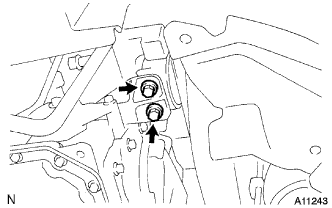 |
With two bolts, attach the engine mounting insulator LH.
 |
Attach the engine insulator RH with 5 bolts and nuts.
 |
Insert the SST into the suspension cross member RH side and the vehicle RH side.
 |
Temporarily tighten in the order of bolt A and b.
Insert the SST into the suspension cross member RH side and the vehicle RH side and tighten with a specified torque.
 |
Insert the SST into the suspension cross member LH side and the vehicle LH side.
 |
Temporarily tighten in the order of bolt A and b.
Insert the SST into the suspension cross member LH side and the vehicle LH side and tighten with a specified torque.
 |
With four bolts, attach the front suspension Menbarin Housing LH and RH.
| 26. Front drive shaft Assisted |
Apply the auto fluid type T-IV to the spline of the inboord joint Assy LH.
 |
Inn -board joint Assy LH spline and use a brass bar and hammer to insert the front drive shaft ASSY LH.
| 27. Front drive shaft Assisted |
Apply an auto fluid type T-IV to the spline of the innboord joint Assem.
Combine the shaft spline and ensure the drive shaft ASSY RH.
 |
Use a square axis flather to attach a drive shaft bearing bracket bracket holesnap ring to a bearing bracket and attach a new bearing bracket bolt No.1.
| 28. Lonxle assess installation |
 |
Press the front axle Assel ASSY LH to the outside of the vehicle, and insert the sprine of the front drive shaft ASSY LH on the front axle ASSY LH and insert it.
 |
Attach the front axle asser to the shock absorber, insert two bolts from the front of the vehicle, and tighten the two nuts.
| 29. Lonxle Assulation RH installation |
| 30. Tie rod end sub-assy LH mounting |
Attach the tie rod end LH to the steering knuckle and tighten it with a castle nut.
Attach a new cottal pin.
| 31. Tie rod end sub-assy RH installation |
| 32. Front suspension Lower arm No.1 LH installation |
Attach it to the steering knuckle of the Lower Arm ASSY and tighten it with a castle nut.
Attach a new clip.
| 33. Front suspension Lower arm No.1 RH installation |
| 34. Stabilizer bar FR installation |
Insert the front stabilizer bar from the right side of the vehicle.
 |
Attach the left and right front stabilizer barbush No.1 to the outside of the Stabilizer bar identification mark.
With four bolts, the front stabilizer bar is attached to the front suspension cross member via the front stabilizer bracket No.1 LH and RH.
| 35. Speed sensor FR LH installation |
 |
At the bolt, attach the speed sensor FR LH to the steering knuckle.
 |
Attach the speed sensor FR LH clamp and flexible hose to the front shock absorber ASSY LH.
| 36. Speed sensor FR RH installation |
| 37. Front axle shaft nut LH installation |
Use a socket wrench (30mm) to attach a new front axle hub nut LH.
 |
Use tagane and hammer to shake the front axle hub nut LH.
| 38. Front axle shaft nut RH installation |
| 39. Exhaust pipe ASSY CTR installation |
Insert an exhaust center pipe ASSY into the exhaust pipe ASSY FR via a new gasket.
Install the exhaust center pipe ASSY with two exhaust pipe support.
 |
The new clamp and bolt are the positions of the clamp and tighten the bolt.
| 40. Proposhaft ASSY installation |
Remove the SST from the extension housing.
Insert propellashaft ASSY into extension housing.
 |
Combine the combined mark of the propeller shaft asshas and the interimide shaft asser.
Attach the propeller shaft ASSY with 4 bolts, washer and four nuts.
| 41. Steering sliding York SUB-ASSY connection |
| 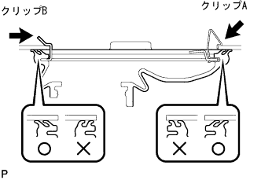 |
Attach a clip B and attach the hole cover and clip A to the body.
 |
Match the matching mark and attach the sliding yoke with bolts.
 |
Remove the seat belt for the steering wheel rotation prevention.
| 42. Steering column hole cover plate installation |
 |
Attach the hole cover plate with two clips.
| 43. Cooler Compressor W/Magnet Clutch ASSY installation |
With 4 bolts, attach the compressor ASSY.
Connect the connector.
| 44. Fan & Alternator V belt installation |
 |
Attach a fan & alternator V belt.
Use a hub nut wrench or bar to press the alternator to the vehicle front side to adjust the tension of the fan & alternator V belt.
 |
Tighten the adjustment bolt A and then tighten the fixing bolt B.
| 45. v Ribed belt inspection |
 |
Tensions and quantity inspection
| When installing a new one "M" | At the time of inspection "M" | |
|---|---|---|
| Alternative belt | 7-8. 5 | 11 -13 |
| P/S belt | 8-0 | 11 -13 |
| When installing a new one "N ｛KGF}" | At the time of inspection "N ｛KGF}" | |
|---|---|---|
| Alternative belt | 539-637 {55-65} | 245-392 {25-40} |
| P/S belt | 441-539 {45-55} | 245-343 {25-35} |
| 46. Installation of engine wires |
 |
Connect the engine wire to the engine control computer and junction block.
Connect the wire harness of the connector and clamp to the engine room junction block.
 |
In the bolt, attach the engine room wire harness earth wire.
Attach the grab box.
| 47. Fuel tube SUB-ASSY connection |
Insert the fuel tube connector until the retainer makes a "click" sound with the axis of the fuel tube connector and the axis of the pipe, and connect the fuel tube.
Attach the fuel pipe clamp No. 1.
| 48. Hita Water Hose Inlet A Connection |
Attach the clamp and connect the heater water inlet hose A.
| 49. Hita Water Hose Outlet A Connection |
Attach the clamp and connect the heater water outlet hose A.
| 50. Union toe check valve hose connection |
Connect the Union Tsu Uchi Check Valve Hose.
| 51. Column Shift Transmission Control Cable Assisted |
In the nut, temporarily attach the control cable to the control shaft lever.
With a new clip, fix the control cable to the bracket.
| 52. Axel letter control cable assessed |
Attach the accelerator control cable to Assy to the throttle bodies ASSY.
| 53. Cylinder head cover No.2 installation |
 |
After tightening the nut A2, attach the nut B2 No.2 cylinder head cover.
| 54. Radiator Assisted |
Attach a radiator asser to the vehicle and connect the connector and wire harness clamp of the cooling fan motor.
| 55. Radiator support SUB-ASSY UPR installation |
| 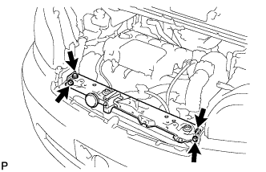 |
Attach the radiator support UPR with four bolts.
Connect the horn ASSY connector and clamp.
| 56. Food rock support brace installation |
 |
Attach the bonnet (food) rock support brace with four bolts.
| 57. Food rock support SUB-ASSY installation |
 |
With 4 bolts and 1 clip, attach the hood (hood) rock support.
| 58. Food lock ASSY installation |
 |
Connect the bonnet lock control cable ASSY to the bonnet lock Assembly.
With three bolts, tentatively attach the bonnet lock asser.
| 59. Radiator grill W/radiator support seal UPR installation |
 |
Assemble radiator grill and radiator support seal UPR.
Combine the claws at the bottom of the radiator grill and attach the radiator grill W/radiator support seal UPR with 6 clips.
| 60. Oil cool linelet hole installation |
Connect an oil cool line lettuce hose and attach a clamp.
| 61. Installation of oil cooler outlet hole |
Connect an oil cooler outlet hole and attach a clamp.
| 62. Radiator inlet hole installation |
Connect the radiator inlet hose and attach the clamp.
| 63. Radiator outlet hole installation |
Connect the radiator outlet hot and attach the clamp.
| 64. Air cleaner ASSY installation |
With 4 bolts, attach the air cleaner case W/Air Cleanine Let No.1 and No.2.
Attach the air cleaner filter element.
Attach the air cleaner cap W/Air Cleaner Hose No.1.
Connect the connector and clamp.
| 65. Battery installation |
Attach the battery tray.
Attach the battery.
Attach a battery clamp and accelerator cable stay with bolts and nuts.
| 66. Installation of front tires |
| 67. |
| 68. Engine oil replenishment |
| 69. Cooling solution (Toyota genuine super LLC) replenishment |
Close the radiator drain kotsuku plug and injection of cooling water until overflowing from the radiator injection.[*1]
Tighten the radiator cap.
Inject the cooling solution into the radiator reserve tank to the upper limit.
Warm up the engine until the thermostat opens.
Stop the engine, wait for the cooling to cool, remove the radiator cap to check the water level.
If the water level is lowered, repeat from [*1].
When the water level does not fall, adjust the cooling solution of the radiator reservoir battank.
| 70. Oil leak inspection |
| 71.Fuel leak inspection |
Confirm that there is no leak in the fuel system with the fuel pressure.
| 72. Cooling solution (Toyota genuine super LLC) leak inspection |
Fill the cooling solution and attach the tester.
137k Pup {1. 4kgf / cm2Put the pressure of} and confirm that there is no leak in each part.
| 73. Shift lever position inspection |
The shift lever shifts from N range to each range.At this time, the shift lever can be operated smoothly, moves moderately in each range, and confirms that the position indicator is displayed and the shift lever is matched.
Make sure that you can shift to each range of P, R, and L only when the shift lever is pulled to the front.
Start the engine and shift to the D range. The vehicle progresses forward, and when the R range is shifted, a buzzer sounds and the vehicle retreats.
| 74. Shift lever position adjustment |
Remove the nut of the control shaft lever and separate the control cable.
Turn the control shaft lever until it stops in the counterclockwise direction, and then return to the position (N range) in two steps.
As shown in the figure, the shift lever is shifted to the N range, pressed against the R range side, attach the control cable and tighten with a nut.
After adjustment, check the operation condition and operation.
| 75. Automatic Transx axleflood quantity inspection |
The parking brake acts.
Step on the brake pedal and start the engine.
Slowly shift the shift lever from P to L in the idle rotation state, and then return to the P range.
 |
Remove the level gauge in the idle rotation state, wipe off the oil with a rag, etc., and then insert it to make sure that the oil is within the level gauge [Hot].
When the amount of oil is small, check the oil leak.
| 76. Engine Anda cover LH installation |
With two screws and two bolts, install the engine and cover LH.
| 77. Engine undercover RH installation |
With two screws and two bolts, install the engine and cover RH.
Tighten the nut.
| 78. Inspection of ignition timing |
Inspection by Tascan
Warm the engine.
Connect Tascan to DLC3.
Operate according to the screen display, and display the [ECU data monitor] screen.
Confirm that the ignition time is within the reference value.
When the engine rotation is raised, make sure that the ignition timing is quickly progressing.
The [Active Test] screen is displayed, and after the ignition time # 1 is selected, the measurement is performed in the TC terminal ON.
Inspection by general instrument
Warm the engine.
Remove the cylinder head cover No.2.
| 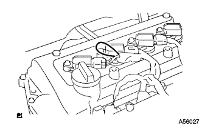 |
Pull out the wire harness in the figure and connect the timing light clip to the wire harness.
 |
Use the diagnodes check wire No.2 to shorten the DLC3 13 (TC) ← → 4 (CG) terminal.
Confirm that the ignition time is within the reference value.
Open between 13 (TC) ← → 4 (CG) of DLC3.
Confirm that the ignition time is within the reference value.
When the engine speed is increased, make sure that the ignition timing is quickly progressing.
| 79. Engine idol rotation inspection |
Inspection by Tascan
Warm the engine.
Connect Tascan to DLC3.
The operation is performed according to the screen instruction, the [ignition time inspection] screen is displayed, and the idol rotation speed is measured.
| 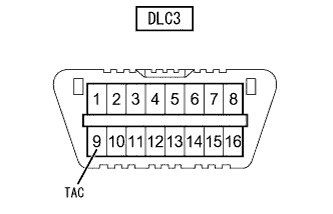 |
Inspection with a circular rotating meter of the primary current detection type
The octopal snack wire No.2 is attached to the 9 (TAC) terminal of DLC3, connecting the rotating meter to measure the idle rotation speed.
| 80. CO, HC concentration inspection |
Start the engine.
Racing for 180 seconds with 2500R/min.
Insert the tester probe into the tail pipe or more when the idle rotates.
Inspect CO and HC concentration.
If Co and HC are outside the reference value, do the procedure shown below.
Oxyzesensensen inspection
Trouble shooting with reference to the table below.
| child | HC | defect | Estimated cause |
|---|---|---|---|
| normal | expensive | Rough idol |
|
| low | expensive | Raffeidle (HC unstable) |
|
| expensive | expensive | Rough idol (black smoke) |
|
| 81. Tire inspection |
reference| 82. Car high inspection |
 |
Move the corner of the vehicle up and down widely, calm down the suspension, and check the vehicle height.
| Tire size | A dimension -B dimensions "M" | D Dimension-C dimensions "M" |
|---|---|---|
| 175 / 70R14 | 92 | 39 |
| 83. Side slip inspection |
Check the side slip with a side slip tester.
In the case of outside the reference value, check the wheel alignment.
| 84. Tour -in inspection |
Shake the vehicle and stabilize the vehicle.
Push the vehicle straight and move forward to move forward.
 |
The guideline of the toein gauge is set on the back of the tire according to the front wheel axis center height.
The tread center is applied to the rear of each front tire, and the distance between the marks (B dimensions) is measured.
Press the vehicle slowly to move forward and rotate the front wheels 180 °.
| 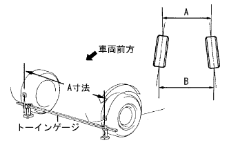 |
The distance between the marks (A dimension) is measured in the front of the vehicle.
Seeking to in.
| 85. Tour -in adjustment |
 |
Measure the length of the screw part of the left and right rack ends.
Remove the rack boots clip.
Loosen the tie rod end rock nut.
If the left and right differences between the rack end screws are not the standard, make adjustments.
If the measured value of the to -in is out of the out side, adjust the rack end with the shorter dimensions in the direction of extending.
If the measured value of the to -in is out of the in -side, adjust the rack end with the longer dimensions.
Check the toe -in again.
Turn the left and right rack ends in the opposite direction of each and adjust so that the to -in enters within the reference value.
Tighten the tie rod end rock nut.
 |
Use the pliers to attach the clip to the range of the figure.
| 86. Wheel cut angle inspection |
 |
Set the turning radius gauge.
Inspect the cutting angle of the wheel.
| Inside (inspection range) | Outside (reference) |
|---|---|
| 39 ° ± 2 ° | 34 ° |
| 87. Camber, casters, king pin angle inspection |
Remove the wheel cap or center ornament.
Lift up the vehicle in a flat place.
Attach a tire clamp compen seta (TCK-01).
Turn the clamp dial of the tire clamp compen seta and expand the tire clamp arm.
 |
Turn the dial, match the two lower claws to the wheel size, apply the lower part of the wheel rim to the upper side claw according to the wheel rim.
| 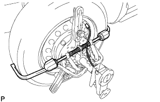 |
Turn the clamp dial, shrink the tire clamp arm and attach it to the tire.
Attach the removal prevention wire to the wheel air valve.
Correct the tire clamp compen seta.
 |
Turn the correction dial of the tire clamp compen seta and adjust it within the range of the Mecha Zero line (red line).
 |
Attach the camber caster king pin gauge to the mounting plate of the tire clamp compen seta and match the matching.
| 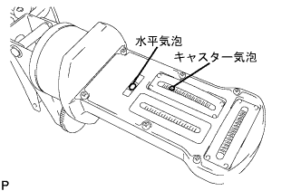 |
Rotate the wheel a little, match the horizontal bubbles of the camber caster kinging pin in the center, adjust the caster bubbles to 0 ° with the adjusted screw of the camber caster kinging pin.
 |
Rotate the wheels 180 °, match the combination of the camber caster kinging pin Gauge and the tire clamp compen seta, and adjust the horizontal bubbles.(*1)
| 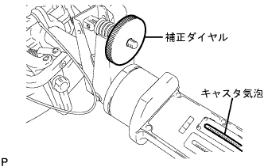 |
The caster bubbles in the above state are read, and the correction dial of the tire clamp compen seta is turned so that the value is 1/2 of the value.(*2)
Repeat the procedure (*1) and (*2), and even if the scale of the caster bubbles is 180 ° positively, the set of the camber caster kinging pin is completed if the wheel is 180 ° positively.
Set the turning radius gauge and drop the vehicle.
Inspect camber, casters and king pin angles.
| Camber | caster | King pin angle |
|---|---|---|
| -0 ° 40 '± 45' | 2 ° 00 '± 45' | 10 ° 15 '± 45' |
Remove the camber caster king pin gauge and tire clamp compen seta.
Attach a wheel cap or center ornament.
| 88. Camber adjustment |
Jack the vehicle and remove the front tire.
 |
Remove the bolt and separate the speed sensor and flexible hose.
| 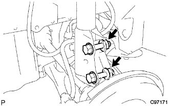 |
Loosen the two mounting nuts on the shock absorbarower side.
 |
Move the lower side of the shock absorber and adjust the camber with the rubber of the bolt and the bolt hole in the steering knuckle.
Tighten two nuts.
|
Attach a flexible hose and a speed sensor with bolts.
Attach the front tire.
Jack the vehicle, shake up and down several times, and calm down the suspension.
Check the camber.
In the case of the reference value, the toe -in inspection should be performed.
In the case of outside the reference value, jack up to remove the front tire, cut the speed sensor and flexible hose separately, and perform the following work.
 |
Remove two and two bolts on the shock absorbarower side.
  |
Select two adjusting bolts and insert them from the front of the vehicle.
| Adjasting bolt | Part number | Bolt diameter (M) | Adjustment |
|---|---|---|---|
| a | 90105-14146 | 13 | ± 15 ' |
| B | 90105-14147 | 12 | ± 30 ' |
| Camber adjustment amount | Set bolt | 90105-14146 | 90105-14147 |
|---|---|---|---|
| -1 ° 00 '--45' | 1 and 2 | ||
| -45 'ー 30' | 1 | 2 | |
| -30 'ー 15' | 1 | 2 | |
| -15 ' -0' | 1 | 2 | |
| 0' -15 ' | 1 | 2 | |
| 15'-30 ' | 1 | 2 | |
| 30 ' -45' | 1 | 2 | |
| 45'-1 ° 00 ' | 1 and 2 |
Attach 2 nuts.
|
Attach a flexible hose and a speed sensor with bolts.
Attach the front tire.
Jack down the vehicle, shake up and down several times, and calm the front suspension.
Check the camber again.
Inspect the toin.
Check the side slip.
| 89. Tascan-at learning value initialization |
Confirm that the shift position is in the P range, connect SST (Tascan) to DLC3 to turn on the IG switch and SST (Tascan) power.
AT learning value initialization implementation
In accordance with the screen display of SST (Tascan), select and execute the main menu [work support] → work support category [transmission] → [At/CVT learning value initialization], and initialize the AT learning value.
| 90. Test mode inspection (speed sensor system) |
reference| 91. Initialization when detaching battery terminal |
reference